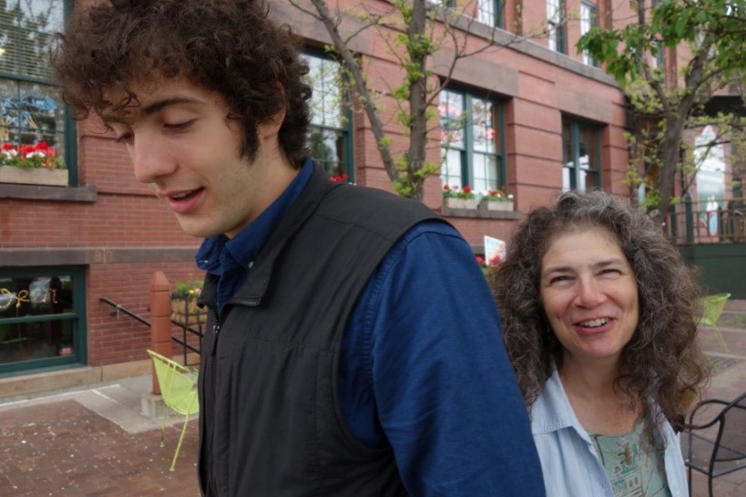

Change in humor tells expresses change in intensity
We can see how humor tells decrease or increase in intensity over time:


The people above go from a medium-intensity humor to a high-intensity humor:
This change in intensity of humor happens through a change in the intensity of their humor tells:
- a light smile into a full smile
- being somewhat loose into being fully loose
- loss of situational awareness into complete loss of situational awareness
- energy into more energy
- raised spirits into even more raised spirits
(and so on)